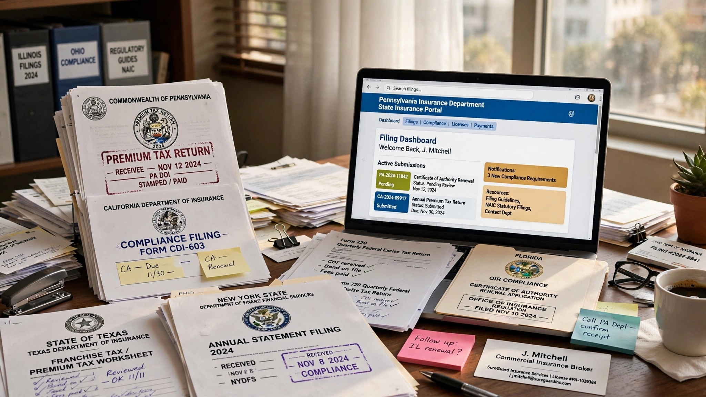

$90 Billion in Insurance Premiums, Filed by Hand Across 50 State Portals
When standard carriers refuse a risk, surplus lines brokers step in. In 2025, that safety valve handled $90.3 billion in premiums. Most of the brokers placing it still track their multi-state tax filings in Excel.

The Problem
Surplus lines insurance exists because the admitted market can't or won't cover every risk in America. A cannabis dispensary in Colorado. A beachfront condo association in Miami. A construction site using experimental fire-resistant materials. A cyber liability policy for a company that just had a breach. Standard carriers decline these risks. Surplus lines carriers accept them. The business is legal, regulated, and essential. But it comes with a compliance burden that would make a tax accountant weep.
What governs surplus lines placement is not a single regulatory system. It is 50 separate state systems, plus the District of Columbia and US territories, each with its own filing requirements, tax rates, declination documentation rules, reporting deadlines, and enforcement mechanisms. The NAIC's Surplus Lines Model Act #870 provides a template, but states adopt and modify it at will. Result: a compliance patchwork where the rules for placing the same type of policy differ in material ways depending on which state the risk sits in.
Consider what a surplus lines broker placing a multi-state commercial property policy must actually do:
Step 1: Diligent search documentation. Before placing any surplus lines policy, the broker must demonstrate that the risk was declined by the admitted market. In Connecticut, this means collecting three specific declinations, each containing "the specific reason for declination, the date declined, and the name and title of the insurance company's underwriter declining the coverage." Old declinations cannot be reused at renewal. New ones are required every time. In Texas, SLTX has adopted "diligent effort" requirements that periodically change. Some states designate certain lines as "export-eligible," requiring no diligent search at all. Brokers must know which rules apply in each state for each line of coverage, document compliance accordingly, and retain those records for inspection.
Step 2: Tax calculation across jurisdictions. Surplus lines tax rates are not uniform. Ohio charges 1.75%. Kentucky charges 7.94% when you include local government taxes. Most states fall between 3% and 5%. For a multi-state risk, premium must be allocated across jurisdictions, with the correct rate applied to each allocation. The Nonadmitted and Reinsurance Reform Act of 2010 (NRRA) simplified this via "home state" taxation but did not eliminate the patchwork, because many states impose additional stamping fees, fire marshal assessments, or local government surcharges on top of the base surplus lines tax.
Step 3: Filing with stamping offices. Fifteen states operate surplus lines stamping offices that review every filing for compliance. In Texas (TIC §981.105), a surplus lines agent must file a copy of each policy within 60 days of the effective or issue date, whichever is later. File late? That's $50 per policy for agents with a sub-5% late rate in the prior year. Repeat offenders pay more. In California, SLACA processes filings and collects the 3% surplus lines tax plus a 0.3% stamping fee. Every stamping office has its own portal, its own data format, and its own error-rejection workflow.
Step 4: Tax reporting and remittance. Washington state requires all surplus lines broker licensees to file a premium tax return annually, even if no business was transacted. Zero business? Still file. Connecticut requires quarterly filings with credits carried forward. Alabama requires monthly policy-level reporting via the state's own portal and annual tax filing through OPTins. Delaware mandates electronic filing only and returns paper forms, with late filing penalties for the delay caused by the rejection. Different states. Different due dates. Different forms. Different penalties.
A wholesale broker operating nationally must manage compliance across all of these systems simultaneously. The Wholesale & Specialty Insurance Association (WSIA) has over 700 member firms. Thousands more independent surplus lines brokers are licensed across the states. At large wholesalers, compliance departments of 10-30 people manually key filings into state portals, track deadlines on shared calendars, and reconcile tax payments against policy records in spreadsheets. At smaller brokers? Owner does it on weekends.
The Gap in the Market
| Solution | What It Does | What's Missing |
|---|---|---|
| OPTins (NAIC) | The NAIC's Online Premium Tax for Insurance system allows electronic filing of surplus lines premium tax returns in participating states. It standardizes the annual tax return format for states that have opted in. | OPTins handles the annual tax return. It does not manage policy-level filings to stamping offices, does not automate diligent search documentation, does not calculate multi-state tax allocation, and does not integrate with the broker's agency management system. It is a filing portal, not a compliance platform. Not all states participate, and the states that do still require separate policy-level reporting through their own stamping office portals. |
| State stamping office portals | Each of the 15 stamping offices operates its own electronic filing system. SLTX, SLACA, Florida Surplus Lines Service Office (FSLSO), and others each accept policy filings through proprietary web portals with state-specific data formats. | Each portal is an island. A broker filing in 10 stamping office states must log into 10 separate portals, enter data in 10 different formats, respond to 10 different error-rejection workflows, and track filing status across 10 separate dashboards. There is no unified view, no cross-state deadline tracking, and no automated data mapping from the broker's management system to each portal's required format. |
| Agency management systems (AMS) | Applied Epic, Vertafore AMS360, and HawkSoft manage the core workflow of insurance agencies: quoting, binding, policy issuance, commission tracking, and accounting. Some have surplus lines modules that generate basic filing forms. | The surplus lines modules in major AMS platforms are afterthoughts. They generate a form. They do not track whether the form was filed, accepted, or rejected. They do not calculate multi-state tax allocation for complex risks. They do not monitor changing state requirements or flag upcoming filing deadlines. They do not automate the diligent search documentation process. The data export from AMS to stamping office portal is typically a manual copy-paste operation. |
| SLIP (Surplus Lines Information Portal) | A data aggregation platform operated by WSIA that collects surplus lines filing data from stamping offices to produce market reports and analytics. | SLIP is an industry analytics tool, not a broker compliance tool. It consumes filing data after submission. It does not help brokers prepare, submit, or track their own filings. |
| Excel / manual processes | The actual incumbent for most mid-market wholesale brokers. A compliance coordinator maintains spreadsheets tracking filing deadlines, tax calculations, and diligent search records. Policy data is manually extracted from the AMS and entered into state portals. | Everything. No automation, no deadline alerts, no audit trail, no cross-state visibility, no tax calculation engine, no error detection before submission, no integration with anything. |
The Solution
A vertical SaaS platform that sits between the broker's agency management system and the 50+ state/territory filing endpoints, automating the compliance workflow for surplus lines placement.
1. Unified filing dashboard ($299/month per office): One interface. Every pending filing across all states, sorted by deadline, with status tracking (draft, submitted, accepted, rejected, corrected). Policy data flows from the broker's AMS via API integration (Applied Epic and Vertafore AMS360 cover roughly 80% of the wholesale market) and automatically maps to each state's required format. When a stamping office rejects a filing, the platform surfaces the specific error, suggests the correction, and resubmits. Status syncs back to the AMS so producers can check compliance without calling the compliance department.
2. Multi-state tax calculation engine ($149/month add-on): For policies covering risks in multiple states, this module allocates premium across jurisdictions using each state's specified methodology and the NRRA home-state framework. It applies the correct surplus lines tax rate, stamping fee, fire marshal assessment, and any local surcharges, producing a tax allocation schedule for filing and premium billing. A continuously updated rate database catches mid-year changes that states occasionally implement without much notice.
3. Diligent search automation ($99/month add-on): States requiring declinations get compliant documentation generated from a template library maintained for each state's specific requirements. For "export-eligible" lines, the system automatically determines whether a diligent search is required based on coverage, state, and current export list. Connecticut wants the underwriter's name, title, specific reason, and date? Structured forms guarantee that format. Every document is timestamped, stored, and instantly retrievable for regulatory examination.
4. Regulatory change monitoring (included in base subscription): State insurance departments change surplus lines requirements with variable notice. Tax rates adjust. Export lists update. Filing format requirements shift when stamping offices upgrade their portals. This module monitors state insurance department bulletins, NAIC model law updates, and stamping office announcements, translating changes into rule updates within the filing engine and alerting affected brokers before the effective date. This is what keeps customers paying: missing a regulatory change isn't a software problem. It's a compliance violation.
5. Audit-ready compliance reporting ($79/month add-on): State regulators periodically examine surplus lines brokers. Examinations typically require filing records, tax payment documentation, and diligent search records for a sample of policies. On-demand report packages deliver every filing, every tax calculation, every declination record, organized by state, policy, and time period, with a complete audit trail. For brokers who have lived through an examination conducted via box-of-paper-files, this feature alone justifies the subscription.
The Math: What Manual Compliance Actually Costs
Consider a mid-size wholesale surplus lines broker operating in 30 states, placing 3,000 policies per year with $200 million in managed premium.
| Cost Category | Manual (Status Quo) | Platform-Enabled |
|---|---|---|
| Compliance staff | 3 FTEs × $85K loaded = $255,000 | 1 FTE × $85K = $85,000 |
| Late-filing penalties | 4% late rate ≈ $6,000/yr | Near zero |
| Tax calculation errors | ~2/quarter, $8,000/yr exposure | Eliminated |
| Platform subscription | $0 | $4,827/mo = $57,924/yr |
| Total annual cost | $269,000 | $142,924 |
| Net annual savings | $126,076 — platform pays for itself 3.2× | |
Each coordinator spends approximately 60% of their time on pure data entry: pulling policy data from the AMS, reformatting it for each state's portal, keying it in, and tracking acceptance. Robot work. Automating 80% of that entry lets a single coordinator handle what three used to.
For large wholesale brokers placing 10,000+ policies per year, the math gets better. Compliance departments of 8-12 people shrink to 2-3, and a single multi-state tax calculation error on a $5 million premium policy can produce a five-figure penalty.
Revenue Model
| Revenue Stream | Amount | Notes |
|---|---|---|
| Base platform (per office/month) | $299 | Unified dashboard, state portal integration, filing submission and tracking, status sync to AMS. Priced per office location to align with how wholesale brokers organize compliance. |
| Multi-state tax engine (per company/month) | $149 | Automated premium allocation, rate calculation, fee scheduling. One subscription covers all states. |
| Diligent search automation (per company/month) | $99 | State-specific declination templates, export list monitoring, structured documentation storage. |
| Audit reporting (per company/month) | $79 | On-demand examination packages, compliance dashboards, regulatory examination support. |
| AMS integration setup (one-time) | $2,500 | Custom API configuration for Applied Epic, Vertafore AMS360, or other AMS platforms. Includes field mapping and data validation rules. |
| Regulatory intelligence feed (per company/month) | $49 | State bulletin monitoring, rule change alerts, effective date tracking. Phase 2. |
Unit economics on a 30-state wholesale broker with 2 offices: Monthly SaaS: 2 × $299 + $149 + $99 + $79 = $1,125. One-time setup: $5,000 (2 AMS integrations). Annual recurring: $13,500. Compared to annual compliance cost savings of $126,000+: LTV:CAC at 3-year retention and $4,000 acquisition cost: 10.1x.
Market Size
| Metric | Scope | Annual Revenue |
|---|---|---|
| TAM | ~4,000 multi-state SL broker entities × $1,500/mo blended | $85M |
| SAM | ~1,200 brokers in 10+ states, $50M+ managed premium | $25.9M |
| SOM (year 3) | 150 brokers at $1,600/mo avg (11.1% SAM penetration) | $2.88M ARR |
WSIA has over 700 member firms, but the total addressable market extends to the full population of licensed surplus lines brokers. Based on state licensing databases and industry estimates, approximately 3,000-5,000 entities actively place business across multiple states. Mid-market brokers need the $1,125/month base-plus-add-ons package. Large national wholesalers need the full $3,500/month suite. Blended across 4,000 active entities plus integration fees and regulatory intelligence, total addressable revenue reaches roughly $85M/year.
SAM narrows to brokers operating in 10+ states with $50M+ in managed premium: about 1,200 firms needing the full suite at blended $1,800/month. SOM at year 3 assumes 150 firms, reflecting the word-of-mouth and conference-driven sales cycle typical of vertical insurance software.
Why Now
The E&S market just had its biggest growth decade ever. Surplus lines premium volume across stamping office states hit $90.3 billion in 2025, up 7.8% year-over-year, with item counts rising 14.1%. California alone posted $5.46 billion in Q1 2026. Broader direct premium hit $115.6 billion in 2023, up 17.4%. Every dollar generates a filing obligation. Compliance workload is growing faster than brokers can hire, and insurance compliance specialists are hard to find. Software that eliminates 80% of manual filing work sells itself.
Climate risk is permanently expanding the surplus lines market. Standard carriers are retreating from wildfire, hurricane, flood, and convective storm exposure at an unprecedented rate. State Farm, Allstate, and Farmers have all restricted or paused new homeowner policy writing in California. Florida's admitted property market shed carriers throughout 2023-2024. Displaced risks flow directly into surplus lines, and brokers absorbing them need compliance infrastructure that scales. AM Best noted that surplus lines carriers have "continued a multiyear surge, absorbing complex risks that admitted carriers have increasingly eschewed." This structural shift is not reversing.
Stamping offices are modernizing, creating API opportunities. Several stamping offices have upgraded or are upgrading their electronic filing systems, moving from manual web-form entry toward structured data submission. SLTX underwent a technology modernization. SLACA expanded its electronic filing capabilities. These upgrades create the first real opportunity for API-level integrations enabling automated submission rather than browser-based manual entry. Five years ago, most stamping offices would not have entertained the conversation. Today, with filing volumes straining their own processing capacity, they want automated submission from compliant third-party platforms.
WSIA's own data acknowledges the gap. Annual surveys consistently identify regulatory compliance as a top operational challenge for member firms, particularly mid-market wholesalers that lack the staff to build internal tools. WSIA's stamping office data program (SLIP) demonstrates appetite for centralized infrastructure. What's missing is the broker-facing automation layer that feeds into it.
Startup Costs
| Category | Cost | Notes |
|---|---|---|
| Core platform development (9 months) | $320K | 2 backend engineers + 1 frontend + 1 insurance domain specialist. Filing workflow engine, state rules database, multi-state tax calculator, AMS integration framework (Applied Epic API, Vertafore AMS360 API). |
| State rules database build | $75K | Comprehensive mapping of filing requirements, tax rates, forms, deadlines, diligent search rules, and stamping office data formats for all 50 states + DC. Requires a licensed surplus lines compliance expert as consultant. This is the defensible moat: getting it right is tedious, keeping it current is harder. |
| Stamping office portal integrations | $90K | Integration engineering for the 15 stamping office electronic filing systems. Starts with the Big 3 (California SLACA, Texas SLTX, Florida FSLSO) representing ~50% of national surplus lines volume, then expands to remaining 12 stamping offices. |
| Compliance and legal review | $40K | Legal review of platform's compliance with state insurance regulations. Engagement with state DOI contacts to validate filing format compatibility. Insurance regulatory counsel on-call. |
| Pilot program (10 brokers) | $30K | Subsidized onboarding for 10 wholesale surplus lines brokers across Texas, California, and Florida. Free platform access for 6 months, dedicated support, case study rights. |
| WSIA conference presence + sales (year 1) | $45K | WSIA Annual Marketplace (the industry's main conference, ~3,000 attendees), Wholesale Connect, regional MGA conferences. Booth, demo stations, travel. This is where every target customer goes once a year. |
| Operating buffer (12 months) | $35K | Cloud infrastructure, monitoring, customer support. The state rules database requires ongoing maintenance as regulations change. |
| Total | $635K |
Limitations
The 3,000-5,000 broker entity estimate is derived from state licensing databases and WSIA membership data. There is no single federal registry of surplus lines brokers. Some states license individuals and entities separately, creating double-counting risk. The actual number of entities actively placing multi-state surplus lines business (the core target market) may be lower than 3,000 if many licensees are inactive or operate within a single state.
The compliance cost savings calculation assumes a broker currently operating with a fully manual process. Brokers who have already built custom internal tools or who use the surplus lines modules in their AMS platforms would see smaller incremental savings. The largest national wholesalers (Amwins, Ryan Specialty, CRC Group) have built proprietary compliance systems and are unlikely early customers for a third-party platform, though their acquired regional operations often remain on legacy processes for years post-acquisition.
Stamping office integration assumes that stamping offices will accept automated submissions from third-party platforms. While the technical capability exists (most stamping offices accept structured data), some may require formal approval or partnership agreements before permitting automated filing. These negotiations could extend the timeline for full national coverage from 9 months to 18-24 months.
The state rules database is a continuous maintenance obligation, not a one-time build. States change surplus lines requirements through bulletins, administrative orders, and legislative action, sometimes with minimal notice. Missing a rule change that causes incorrect filings for customers would be a critical failure. This maintenance cost is not fully captured in the startup budget and will require dedicated staffing (1 FTE compliance analyst) once the customer base grows beyond 50 firms.
Strongest Counterargument
Applied Systems (parent of Applied Epic, the dominant AMS for wholesale brokers) could build this as an Epic module and bundle it at no additional cost. Applied already has the policy data, the broker relationships, and the technical infrastructure. If surplus lines compliance automation threatens their renewal rates or creates a competitive gap against Vertafore, they'd be motivated to add the functionality natively. Their 2023 acquisition of Planck (AI underwriting data) and ongoing platform investments signal willingness to expand into adjacent workflows. A bundled compliance module inside Epic would mean zero switching cost for existing users, making a standalone SaaS platform redundant for 50-60% of the target market overnight.
Here's why that hasn't happened and probably won't: Applied has had over a decade to build this. They haven't. Their surplus lines module generates forms but doesn't automate the full workflow. Classic innovator's dilemma: the feature is important enough that brokers complain about it at every conference, but not important enough to justify diverting engineering resources from core platform features that drive new sales (quoting, rating, client portal). Vertical compliance SaaS companies succeed precisely because horizontal platform vendors chronically underinvest in the compliance layer for each vertical. Additionally, stamping office integration work is relationship-heavy and state-specific, the kind of thing large platform companies are structurally bad at prioritizing. Applied would need relationships with 15 separate stamping offices, each with unique technical requirements and approval processes. A focused startup can make those relationships its entire reason for existing. Applied has fifty other things on its roadmap.
What You Can Do
If you're a surplus lines broker with 3+ compliance staff: Calculate your actual cost per filing. Take your compliance department's total loaded compensation, add late-filing penalties, tax error corrections, and the value of any overtime around quarterly due dates. Divide by your annual filing count. If the number is above $15 per filing, you are overpaying for manual labor that software should handle. If it is above $25, you are leaving significant margin on the table. Most brokers have never done this calculation because compliance is treated as overhead rather than an optimizable workflow.
If you're a small surplus lines broker doing your own compliance: Focus first on the states where you file most frequently and automate those. OPTins handles annual tax returns for participating states. For policy-level filings, create standardized templates in your AMS for each stamping office state's required format. Set calendar reminders 10 days before every filing deadline. Track your late-filing rate. If it is above 2%, the $50-per-filing penalties are a clear signal that your current process does not scale with your book of business.
If you're building this: Start with Texas. SLTX processes more filings than any other stamping office, the late-filing penalty structure creates clear economic pain, and Texas surplus lines premium volume grew 14.4% in Q1 2026. Sign up 5 wholesale brokers in Houston and Dallas for a free pilot. The MVP is a filing dashboard that pulls policy data from Applied Epic, maps it to the SLTX required format, submits electronically, and tracks acceptance/rejection status. If you can prove that you reduce filing time by 70% and eliminate late-filing penalties for your pilot brokers, every wholesaler at the next WSIA Marketplace will want a demo. Expand to California (SLACA) and Florida (FSLSO) in months 4-6. Those three states represent approximately half of national surplus lines volume. By the time you reach 15-state coverage, your state rules database is your moat and your reference customers are your sales force.
The Bottom Line
Ninety billion dollars in premiums. Fifty filing regimes. Fifteen stamping office portals. A tax calculation mess that changes every legislative session. And the brokers managing all of it are hiring humans to do robot work: copying data from one system, reformatting it for another, keying it into a third, and tracking whether the third one accepted it. Technology to automate 80% of this exists. Customer pain is documented in every WSIA survey. Climate risk, cyber risk, and casualty severity keep expanding the surplus lines market with no end in sight. Build the multi-state filing automation platform, and you own the compliance layer of a $90 billion market. Unlike most SaaS, this one has a built-in retention mechanism: once a broker's workflow runs through your system, switching means re-training staff, re-mapping data, and risking filing gaps during transition. Nobody switches compliance systems voluntarily. Build it right, and they stay forever.